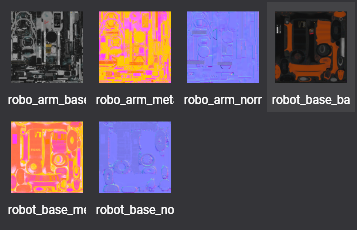
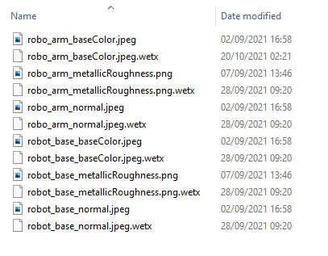

Import a texture

In Evergine Studio, importing an image file will create a Texture asset, as explained in this article.
Inspect Textures in Asset Details
You can find the texture assets in the Assets Details panel when you select a folder in the Project Explorer.

Texture files in content directory
Textures imported in Evergine create an aditional metadata .wetx file.

Supported formats:
Evergine supports the following image formats:
| Extension | Compression | Alpha | Bits per pixel | Supported texture types |
|---|---|---|---|---|
.jpg, jpeg |
Lossy compression. Configurable | No | 24 | Texture2D |
.png |
Lossless compression | Yes | 8, 24, 48 | Texture2D |
.bmp |
No compression | Yes (not common) | 24 | Texture2D |
.gif |
Indexed colors | Yes | 8 | Texture2D |
.tga |
No | Yes | 32 | Texture2D |
.hdr |
No | No | 48 or 96 (high dynamic range) | Texture2D |
.dds |
Yes (S3, DXT1, DXT3, DXT5) | Yes | Multiple | Texture2D, Texture2DArray, Texture1D, Texture1DArray, TextureCube, TextureCubeArray, Texture3D |
.ktx |
Yes (ETC1S) | Yes | Multiple | Texture2D, Texture2DArray, Texture1D, Texture1DArray, TextureCube, TextureCubeArray, Texture3D |
Sampler State association
A Texture graphic resource needs a Sampler State asset for properly filtering it. That's why the Texture asset contains a reference to a SamplerState of your project.

This way the Texture has a default SamplerState associated. Evergine will automatically use it.